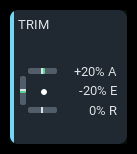
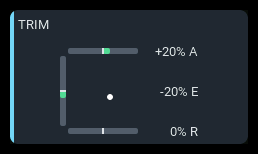
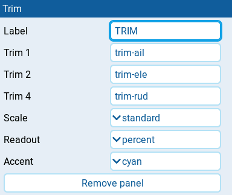

Trim
| 1x2 | 2x1 | 2x2 |
|---|---|---|
 |
 |
Displays the radio's effective aileron, elevator, and rudder trim positions, including values inherited from another flight mode. The panel is read-only; use the radio's trim controls to change a trim. No aircraft telemetry is needed.
Settings

| Setting | Default | What it does |
|---|---|---|
| Label | TRIM | Panel heading. |
| Trim 1 | trim-ail | Trim source shown as aileron on the top bar. Enter its EdgeTX source name as text, such as trim-ail. |
| Trim 2 | trim-ele | Trim source shown as elevator on the left bar. Enter its EdgeTX source name as text, such as trim-ele. |
| Trim 4 | trim-rud | Trim source shown as rudder on the bottom bar. Enter its EdgeTX source name as text, such as trim-rud. |
| Scale | auto | auto starts with standard travel and widens to extended travel when needed. standard or extended keeps the range fixed. |
| Readout | percent | percent shows signed percentages; raw shows stored trim units; none hides numeric readouts. Detected three-position trims show named positions instead of numbers. |
| Accent | cyan | Panel accent: cyan, green, amber, or orange. Available trim fills stay green. |
Behavior
Aileron is the top bar, elevator the left bar, and rudder the bottom bar.
Fill extends from neutral toward the current trim. The white dot shows the
combined aileron/elevator position and disappears if either source is
unavailable. Source names can change, but the positions and A, E, and R
readout suffixes retain their assigned roles.
Readout uses percentages of the selected scale, or stored trim units for raw. Standard travel is ±128 stored units; extended travel is ±512. auto widens each trim's scale once a non-three-position reading exceeds standard travel, and keeps that wider scale even when the trim returns toward center. A fixed scale clips the visual at its ends without changing the raw readout.
Three-position trims show 3P MID, 3P HI, or 3P LO. Detection requires
observing both center and full deflection without intermediate positions;
a single end-stop reading cannot distinguish a normal trim from a toggle.
Captions and readouts are hidden when they do not fit and return when the
panel is enlarged.
States
| Condition | Presentation |
|---|---|
| Trim is readable | Green fill from neutral, with a readout when enabled and space permits. |
| Aileron and elevator are readable | White dot shows their combined position. |
| Aileron or elevator unavailable | White dot is hidden. |
| One trim unavailable | Its bar is faint; its readout shows -- A, -- E, or -- R when space permits. Other axes remain active. |
| All three sources unavailable | N/A badge; all three bars are faint. |
| Three-position trim detected | 3P MID, 3P HI, or 3P LO replaces its numeric readout. |